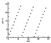
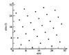
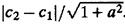
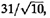
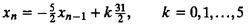
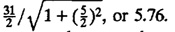

27.7 SPECTRAL TEST
Proposed by Conveyou and McPherson (1967), a spectral test determines how densely the k-tuples {x1, x2,...,k} can fill up the k-dimensional hyperspace. It was observed that the k-tuples from an LCG fall on a finite number of parallel hyperplanes. For example, if we plot successive pairs of numbers as points in two-dimensional space, all points would lie on a finite number of lines. In three dimensions, successive triplets lie on a finite number of planes. The following example illustrates this for a sample LCG.
- Example 27.6 Consider the generator
xn = 3xn-1 mod 31
- Figure 27.6 shows the plot of overlapping pairs obtained from the LCG. It is shown that all the points lie on three straight lines. This is not a coincidence. By definition, the successive numbers obtained from the LCG are linearly related:
xn = 3xn-1 mod 31
- The equations of the straight lines are easily seen to be
xn = 3xn-1
xn = 3xn-1 - 31
xn = 3xn-1 - 62
or
xn = 3xn-1 - 31k, k = 0,1,2

FIGURE 27.6 Plot of overlapping pairs from the LCG xn = 3xn-1 mod 31.
- Similarly, in three dimensions, the points (xn, xn-1, xn-2) for the generator would lie on five planes given by
xn = 2xn-1 + 3xn-2 -31k, k = 0,1,...,4
- This equation is obtained by adding the following equation to Equation (27.2):
xn-1 = 3xn-2 -31k1, k1 = 0,1,2
- Note that k + k1 will be an integer between 0 and 4.
Marsaglia (1968) has shown that successive k-tuples obtained from an LCG fall on, at most, (k!m1/k) parallel hyperplanes, where m is the modulus used in the LCG. For example, with m = 232, fewer than 2953 hyperplanes will contain all 3-tuples, fewer than 566 hyperplanes will contain all 4-tuples, and fewer than 41 hyperplanes will contain all 10-tuples. Thus, this is a weakness of LCGs.
The spectral test determines the maximum distance between adjacent hyperplanes. The larger this distance, the worse is the generator. For generators with a small period, the distance can be determined by complete enumeration as illustrated by the following example.
- Example 27.7 Let us compare the following two generators:
xn = 3xn-1 mod 31
xn = 13xn-1 mod 31
- Using a seed of x0 = 15, we obtain the following sequence from the first generator: 14, 11, 2, 6, 18, 23, 7, 21, 1, 3, 9, 27, 19, 26, 16, 17, 20, 29, 25, 13, 8, 24, 10, 30, 28, 22, 4, 12, 5, 15, 14.
- Using the same seed in the second generator, we obtain the following sequence: 9, 24, 2, 26, 28, 23, 20, 12, 1, 13, 14, 27, 10, 6, 16, 22, 7, 29, 5, 3, 8, 11, 19, 30, 18, 17, 4, 21, 25, 15, 9.
- Notice that every number between 1 and 30 occurs once and only once in both sequences. Thus, both sequences will pass the chi-square test for uniformity. A plot of successive overlapping pairs of the first sequence is shown in Figure 27.6. We see that the points lie on 3 straight lines of positive slope or 10 lines of negative slope. Since the distance between the lines of positive slope is more, we consider only the lines with positive slope. Their equations are
xn = 3xn-1
xn = 3xn-1 -31
xn = 3xn-1 -62

FIGURE 27.7 Plot of n + 1 versus xn for the LCG xn = 13xn-1 mod 31.
- The distance between two parallel lines y = ax + c1 and y = ax + c2 is given by . Thus, the distance between the lines is , or 9.80.
- The plot of successive overlapping pairs of the second sequence is shown in Figure 27.7. In this case, all points fall on seven straight lines of positive slope or six straight lines of negative slope. The distance between lines of negative slope is larger than that between lines of positive slope, and therefore, for this generator, we will consider the set of lines with negative slopes. Their equations are

- The distance between lines is 
- Compared to the first generator, the second generator has a smaller maximum distance, and hence, the second generator has a better 2-distributivity.
- It must be pointed out that in selecting between the sets of lines with positive and negative slopes, it is the set with a larger distance that is se-lected. This may not always be the set with fewer lines.
Notice that we used overlapping k-tuples in Example 27.7. Either overlapping or nonoverlapping k-tuples can be used. With overlapping k-tuples, we have k times as many points, which makes the graph visually more complete. The number of hyperplanes and the distance between them are the same with either choice. Thus, the result of the spectral test remains the same. This is not true for the serial test described in Section 27.6 where only nonoverlapping k-tuples should be used.
For generators with a large m and for higher dimensions, complete enumeration is not easy, and finding the maximum distance becomes quite complex. See Knuth (1981) for computing the maximum distance without complete enumeration.
EXERCISES
- 27.1 Generate 10,000 numbers using a seed of x0 = 1 in the following generator:
xn = 75xn-1 mod(231 -1)
- Classify the numbers into 10 equal-size cells and test for uniformity using the chi-square test at 90% confidence.
- 27.2 Generate 15 numbers using a seed of x0 = 1 in the following generator:
xn = (5xn-1 + 1) mod16
- Perform a K-S test and check whether the sequence passes the test at a 95% confidence level.
- 27.3 Generate 10,000 numbers using a seed of x0 = 1 in the following LCG:
xn = 48271xn-1 mod(231 -1)
- Perform the serial correlation test of randomness at 90% confidence and report the result.
- 27.4 Using the spectral test, compare the following two generators:
xn = (7xn-1 + 1) mod13
xn = (11xn-1 + 1) mod13
- Which generator has a better 2-distributivity?
){kind=link}
){kind=link}
){kind=link}
){kind=link}